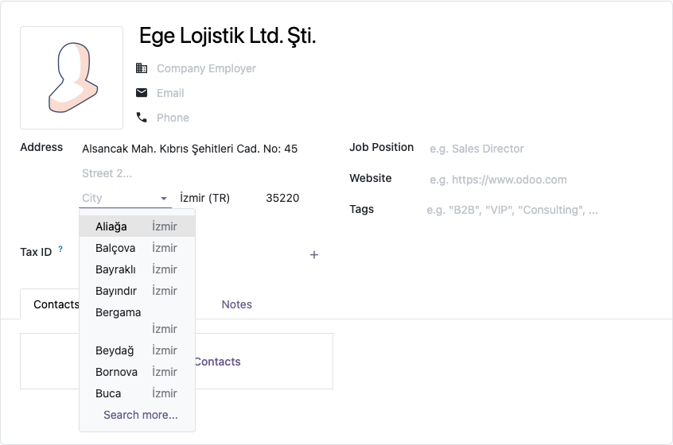

Turkish addresses are written as district and province: "Kadıköy/İstanbul". Odoo knows the 81 provinces but not the 973 districts, so the city is free text and gets typed in many ways. This module adds every district and turns the city into a choice that follows the province.
Caferağa Mah. Moda Cad. No: 12
34710 Kadıköy/İstanbul
Türkiye
Districts can be reviewed in Contacts > Configuration > Localization > Cities.

Odoo 16.0 (tested on Community). Depends on contacts and base_address_extended. No external service
is used; the district list is shipped with the module. Licensed under LGPL-3. Questions and
bug reports: destek@odoo-tr.com
Odoo 81 ili tanır ama ilçeleri tanımaz; şehir alanı serbest metin olduğu için ilçe herkes tarafından farklı yazılır. Bu modül 973 ilçenin tamamını ekler ve ilçeyi, seçilen ile göre süzülen bir listeye çevirir.
Sorular ve hata bildirimleri: destek@odoo-tr.com